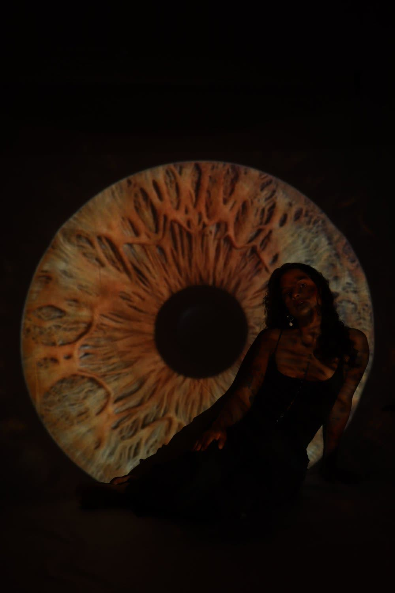

Artists · 0 works
Tuty Navarro

Tuty Navarro is a Colombian visual artist and designer working under the name Synesthesia. With more than a decade of experience, her practice brings together audiovisual art, light, sound, music, and technology to create immersive environments where digital experimentation intersects with memory, identity, and ancestral knowledge.
Her visual language is characterized by psychedelic, symbolic, and geometric imagery. Through VJing, projection, audiovisual performance, and immersive installation, Navarro explores the relationship between image and sound, transforming space into a multisensory experience.
Among her most significant projects is Orígenes Ancestrales , an immersive audiovisual installation inspired by the ritual and symbolic universe surrounding yagé. Combining projected imagery, sound, geometry, and references to Amazonian landscapes, the work explores ancestry, spirituality, nature, and the transmission of cultural memory through contemporary digital media.
Presented by Vivance Art in Paris during the Latin America and Caribbean Weeks 2025, Orígenes Ancestrales reflects Navarro's broader artistic approach: using technology not as an end in itself, but as a bridge between contemporary experience and ancestral memory.